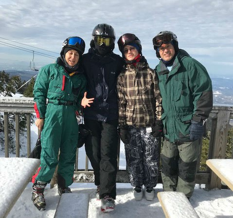
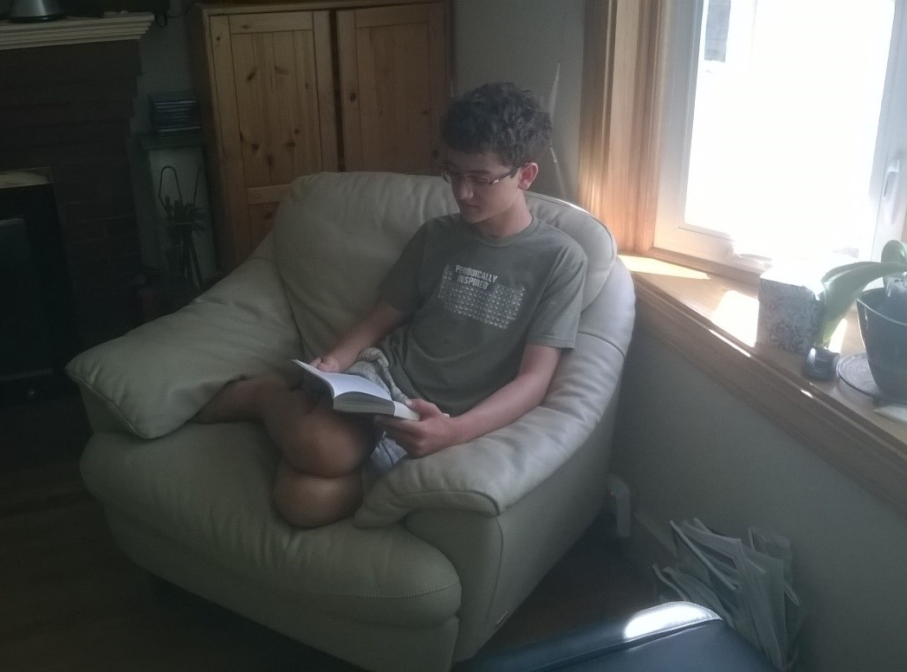

Über Mich
Hallo! Ich heiße Daniel Abadjiev. Ich komme aus den USA. Ich wohne in Watertown, Massachusetts. Watertown ist in der Nähe von Boston.
Ich spreche Englisch, Bulgarisch, Französisch, und ein bisschen Lateinisch. Ich hatte für einem Semester ein bisschen Deutsch lernen.
Watertown ist eine kleine Stadt in der Nähe von Boston. Watertown ist ruhig und friedlich. Ich kann nach Boston mit einem Fahrrad fahren. Watertown ist im Massachusetts, und Massachusetts ist im Nordösten von den USA. Das Wetter ändert sich immer im Massachusetts.
Professional
Ich studiere Mathematik und Physik an der Northeastern Universität.
Ich möchte möglicherweise ein Praktikum in Deutschland oder in der Schweiz machen. Meine Forschungsinteressen sind breit in Physik und Mathematik, aber ich mag auch Astrophysik, Partikelphysik, und Knotentheorie mag.
Persönlich
Meine Hobbys sind Windsurfen, Ski Fahren, und Lesen, und ich mag Musik sehr gern. Ich singe in einem Chor, das Chor von Northeastern. Ich spiele auch in einem Theater, das Theater von Northeastern.
Windsurfen

Ich hat seit war ich 8 Jahr alt gewindsurft. Meine Familie windsurft auf Cape Cod. Windusrfen ist amüsant und erregend.
Ski Fahren
Ich hat seit meiner Jugend Ski gefahren. Ich fahre Ski mit meiner Familie normalerweise in New Hampshire und manchmal in Quebec oder in Vermont.
Lesen
Ich mag auch sehr gern lesen und ich lese viel Fantasy-Literatur. Meine Lieblingsautoren umfassen (in keine Reihenfolge) Robin Hobb, Cinda Williams Chima, Ayn Rand, Patrick Rothfuss, Rafael Sabatini, George Orwell, Tessa Gratton, Maggie Stiefvater, Philip Pullman, Cornelia Funke, Angie Sage, Eoin Colfer, J. K. Rowling, Lois Lowry, J. R. R. Tolkien, Orson Scott Card, Erin Morgenstern, Gregory Maguire, und N. K. Jemisin.
In diesem Foto lese ich The Scorpio Races von Maggie Stiefvater.